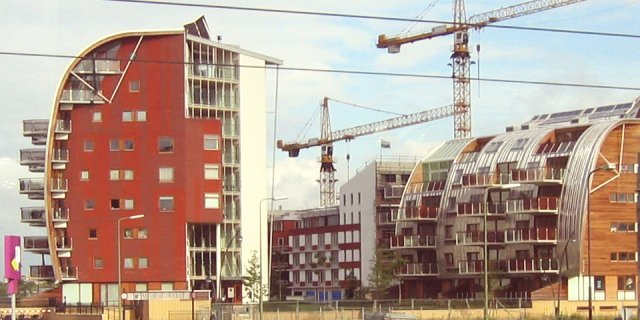
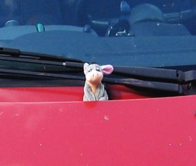

Eindhoven was a much anticipated part of the vacation for me. Out of internet friends I was to meet on my vacation, I spoke with Wynke (pronounced Veenkuh) the most. She was one of the ones who taught me a lot about cooking over the years. Her place was not big enough to host both me and Miller, so we were just stopping in for moussaka, which I had been hearing about for years. Another part of the trip would be to see Wynke in her natural habitat, the university's computer lab, so that, along with an annual Eindhoven festival, was on the agenda.

On the train ride from Amsterdam to Eindhoven, I snapped a picture of these very oddly shaped buildings.
We arrived at Eindhoven, and here is its fancy church.
Behind the windows of some unused building was the bones from a nearby archaeological dig nicely laid out.
Posted on a wall was a old map of Eindhoven back in the days when it was spelled "Eyndhouen"
While passing over a pond in Eindhoven, we saw authentic Dutch ducks.
We entered a museum of modern art, and this was the museum I enjoyed most through the entire vacation. At the entrance was an exhibit consisting of a video tape of a group of people yelling. The yelling was amusing because it echoed down the halls, and let you tell easily when you were on the ground floor. Not too much special about this painting, but it looked nice.
Some sculptures were given their own glass rooms with the shimmering duck pond behind it.
There was an anime-style video exhibit showing a girl talking in stream of consciousness-style. Huge rooms were reserved for the separate movies, with an artistically crafted projector for each.
This was a dazzling mechanical exhibit showing both red and green spot lights reflecting off pieces of glass and metal that noisily clanged together as they rotated.
Here was the most impressive exhibit in the museum. It looked at first like a dingy room with a sink and mirror. Upon closer inspection, we realized we couldn't see our reflections in the mirror. Normally, you would be able to clearly see Miller's reflection in this picture. We opted against living out our existences as vampires, and instead learned that there was a very carefully constructed replica of the room behind a glass window, constructed out of cardboard. This artist was incredibly skilled, and covered every detail down to the cracks in the leather and smudges of dirt on the sink. Upon very careful inspection, you can see that a blinking light was slightly out of sync.

Back home, we enjoyed the game Munchkins, which is a card game that makes fun of roleplayers. I took a picture of the Dutch version just to show and tell.
In the Eindhoven shop with the games, we saw another very well-behaved dog minding the entrance. This dog is a pretty one. It's probably underappreciated, being surrounded by hundreds of games. Sigh.
Approaching the festival, we saw this tacky sculpture. Apparently no one really likes the bowling pins, but they were in Eindhoven for now. Bleh, what a nasty eyesore. In actuality, I think it looks interesting, but it's not like I have to live with it.

We reached the entrance of the festival, complete with the big inflated people.
In the festival was a shop that sold lots of candy sticks. Wynke bought us both cinnamon sticks, because they were typical Dutch treats. They were scrumptious, yet very sugary.
A band played happy music as we walked by.
People sat on a bench and pet innocent ponies for hours on end. In fact, people were outright hogging the ponies for themselves.

Salty eels and fish were available to snack on. Dutch people of all ages and genders just bought these and started chomping on them.
From left to right, Wynke, dragon, me.
Wynke's university with a sculpture and some trees in front of it.
This is the server that I've heard about over the years. Other people have heard about it too and wrote graffiti on it. Wynke is a system administrator of the computer lab (named "Stack"), so it's perfectly okay. In fact, they gave us each a beer, and free Stack t-shirts. All computer labs should have their own t-shirts.
One of the cabinets was heavily decorated, and we salute Amiga lovers.
Here's an old paperweight seen within the university walls.
Here's a modern art paperweight seen outside the university walls.

I think of Wynke's car as the most adorable car on the planet, and she's proud of that. In fact, I won her a stuffed donkey in the festival, so I had her put it in front of the windshield. It seemed to match the car well.
The window and entrance to Wynke's domicile.
Wynke's bike
And here's the obligatory group photo. Others in the photo are Wynke's other friends that also feasted upon the moussaka.
Back